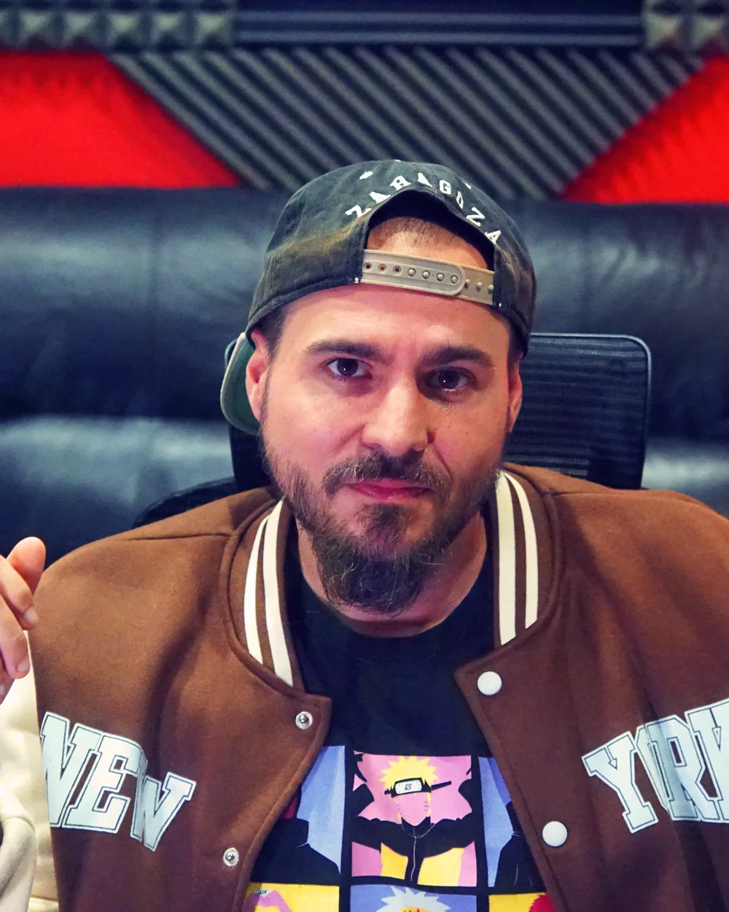
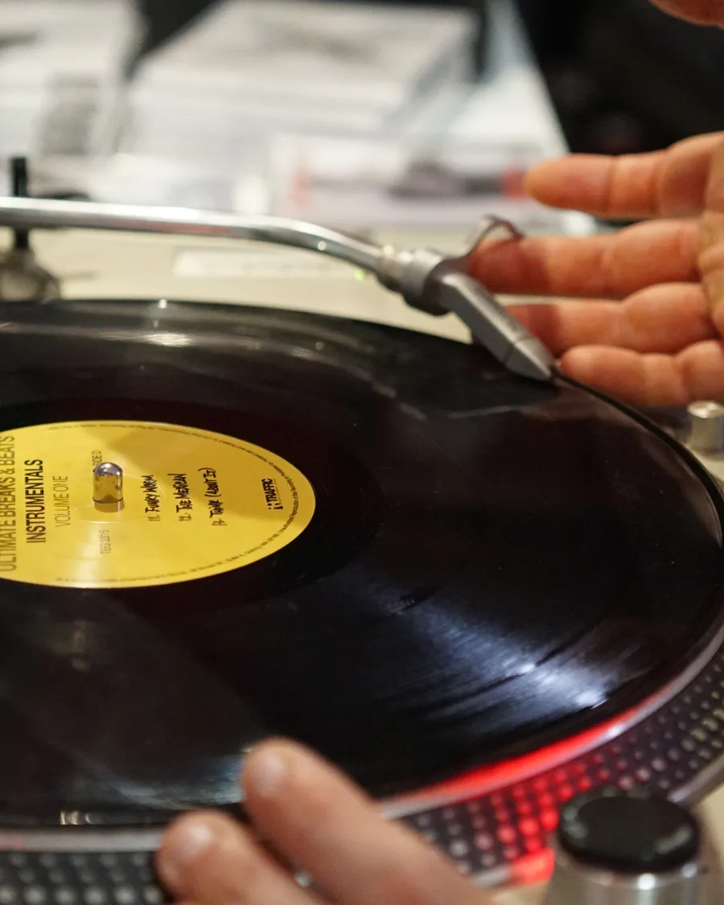
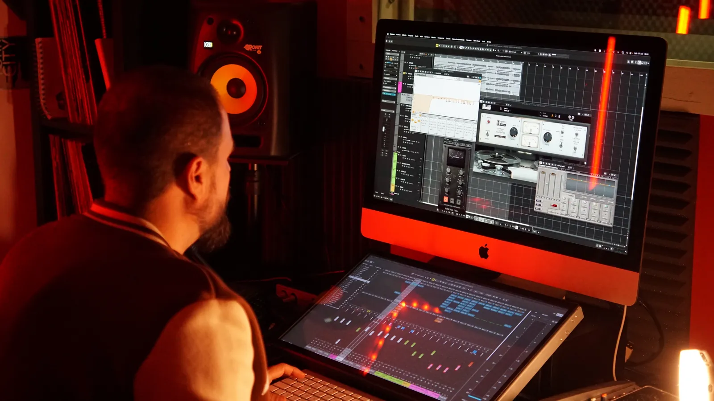
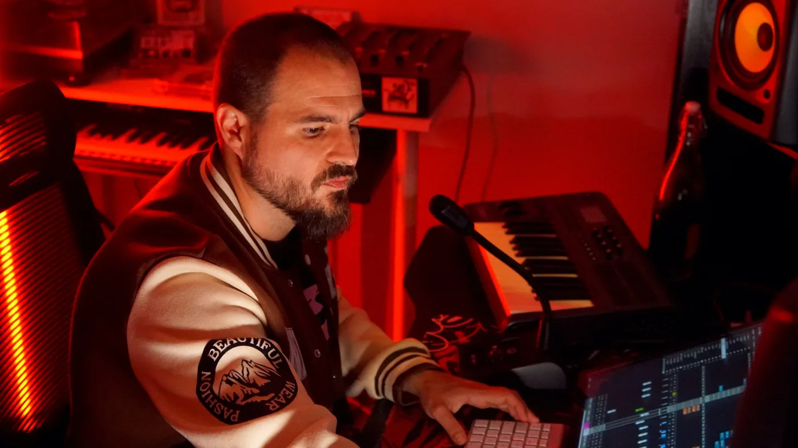
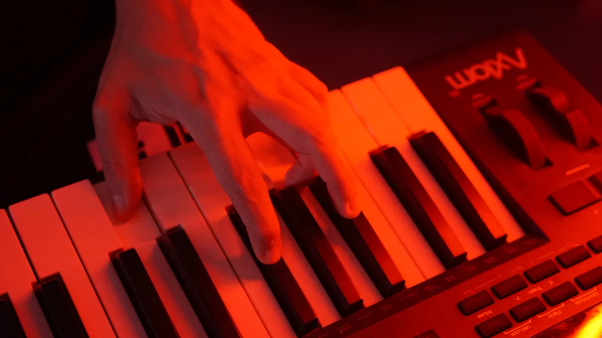
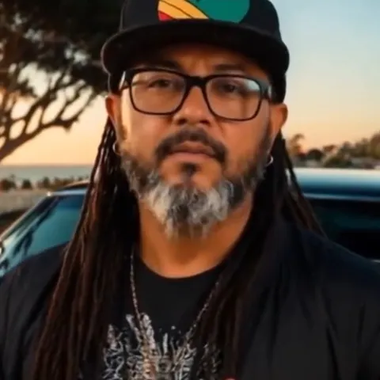
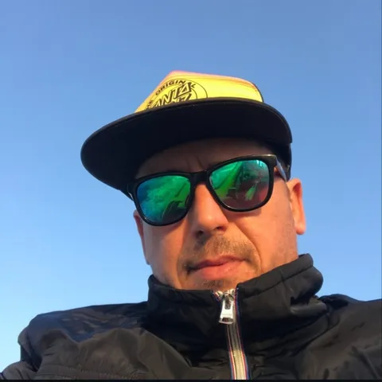
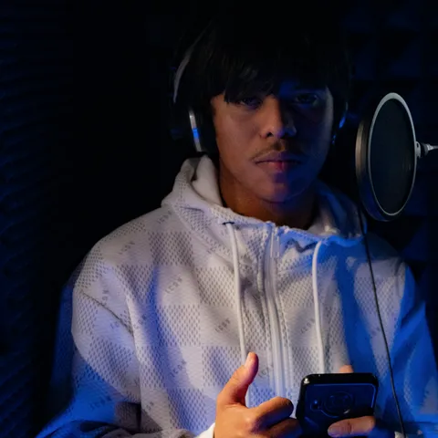
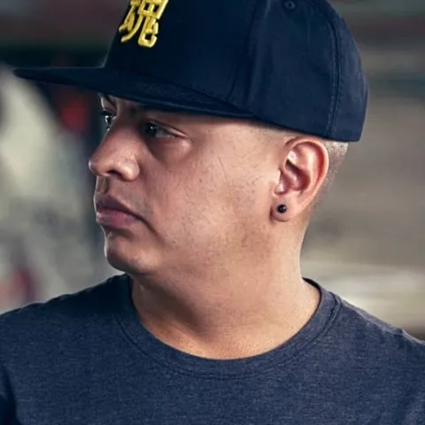

El oído
Escucho esta música desde los 12 años. Capto al momento lo que tienes en la cabeza, aunque no sepas explicarlo con palabras técnicas.
Artista y productor · Refuge Sound Record
Soy Adri. Desde 2012 grabo, mezclo y masterizo a artistas que tienen algo que contar y quieren apostar por ello. Trato cada tema como si fuera mío, y sales del estudio con una canción de la que sentirte orgulloso y sabiendo más que cuando entraste.
00 / Empieza por aquí
No hace falta que sepas de técnica ni que lo tengas todo resuelto. Hay una forma de trabajar contigo, tanto si vienes con una letra como si estás construyendo un proyecto entero.
¿Solo necesitas mezcla, mastering, un beat o una grabación puntual? Mira los servicios a medida

Quién soy
Era un chaval bastante perdido que se pasaba seis horas al día escuchando rap. La música me acompañó en los momentos difíciles y, cuando empecé a escribir mis propias canciones, descubrí que podía sacar todo lo que llevaba dentro.
Empecé desde cero y por mi cuenta: aprendí a producir para tener mis propios beats y aprendí sonido para sonar bien. Grababa en mi cuarto y los artistas llegaron solos, sin anuncios, por los resultados. Después levanté Refuge con mis manos, en cuatro meses de obras.
Sigo siendo aquel chaval que se emociona con una canción y sigo sacando temas como artista, así que conozco los dos lados del cristal. También enseño producción musical y, con mi asociación, llevo talleres de rap con conciencia a jóvenes. Si vienes con actitud, te acompaño, empieces hoy o lleves años.
AdriPuntoEfe
Manifiesto
No dejes de ser tú.
De pequeños creamos sin pedir permiso. Después crecemos, empezamos a preocuparnos por lo que pensarán los demás y poco a poco silenciamos a ese niño rebelde que solo quería expresarse.
Pero el éxito no tiene una única forma. Puedes soñar con llenar estadios o simplemente querer terminar esa canción que llevas tanto tiempo imaginando. Lo importante es que lo que hagas te represente.
De pequeños creamos sin pedir permiso.
Cantamos, bailamos, inventamos historias. No nos preguntamos si somos suficientemente buenos. Simplemente hacemos lo que sentimos.
Después crecemos.
Y empezamos a preocuparnos por lo que pensarán los demás. Por si vamos a tener éxito. Por si estamos perdiendo el tiempo. Por si merece la pena intentarlo.
Y poco a poco vamos silenciando a ese niño rebelde que solo quería expresarse y ser él mismo.
Pero hay cosas que nunca desaparecen.
Esa canción que te pone los pelos de punta. Ese ritmo que te obliga a moverte. Esa necesidad de escribir cuando no encuentras las palabras para explicar lo que te pasa.
La música no significa lo mismo para todos.
Para algunos es compañía. Para otros, una vía de escape. Para otros, una manera de conectar con el mundo.
Y para algunos de nosotros es mucho más que eso.
Es nuestro centro.
Yo era un chaval bastante perdido que se pasaba seis horas al día escuchando rap.
No tenía muy claro qué quería hacer con mi vida. Me costaba encontrar mi sitio y, durante mucho tiempo, la música fue de las pocas cosas que realmente me llenaban.
Me acompañó en momentos difíciles. Y cuando empecé a escribir mis propias canciones, descubrí que también podía ayudarme a expresar todo aquello que llevaba dentro.
Con el tiempo, lo que parecía una simple afición acabó dándole un propósito a mi vida.
Y tuve la suerte de convertirlo en mi profesión.
Pero hay algo que nunca ha cambiado.
Sigo siendo aquel chaval que se emociona escuchando una canción, que disfruta creando y que necesita la música para sentirse él mismo.
Solo que ahora llevo muchos años aprendiendo, creando y trabajando con otros artistas.
Y con el tiempo entendí algo.
No quiero dedicar mi vida únicamente a hacer que las canciones suenen mejor.
Que también. Y mucho.
Quiero ayudar a otras personas a sacar lo que llevan dentro.
A perder el miedo a expresarse.
A confiar en sus ideas y descubrir de lo que son capaces.
A aprender, mejorar y disfrutar del proceso de crear música.
A dejar de depender de la aprobación de los demás para sentirse orgullosas de lo que hacen.
Porque el éxito no tiene una única forma.
Puedes soñar con llenar estadios o simplemente querer terminar esa canción que llevas tanto tiempo imaginando.
Lo importante es que lo que hagas te represente.
Que puedas escucharlo y sentir que hay algo de ti en cada palabra, en cada nota, en cada decisión.
Y que cuando llegue el momento de compartirlo con el mundo, puedas hacerlo con orgullo.
Para eso construí Refuge.
Un lugar donde tus ideas importan.
Donde puedes experimentar, equivocarte, aprender y mejorar.
Donde nos tomamos tu música en serio, porque sabemos lo importante que puede llegar a ser para ti.
Donde pongo toda mi experiencia, mi criterio y mi compromiso al servicio de lo que quieres crear.
No sé qué significa la música en tu vida.
Pero sé lo que significa en la mía.
Y si algo he aprendido durante todos estos años es que merece la pena apostar por aquello que te hace sentir tú mismo.
No apagues lo que llevas dentro.
Dale una voz. Dale un lugar. Dale vida.
Saca lo que llevas dentro. Que suene como tiene que sonar.

Para artistas con algo que contar
Tú relájate y saca lo que llevas dentro. Del resto me encargo yo.
Cómo trabajo
Escucho esta música desde los 12 años. Capto al momento lo que tienes en la cabeza, aunque no sepas explicarlo con palabras técnicas.
Desde la primera toma sé qué pistas necesita tu tema y cómo voy a tratar cada una: dobles, adlibs, coros. Te explico el porqué de cada cosa y sales sabiendo más.
Voy rápido con el programa y probamos ideas en tiempo real, contigo al lado. El tema crece en la sesión, no en un correo una semana después.



Antes y después
El mismo fragmento, antes y después de pasar por mis manos. Pulsa play y cambia de versión sin cortar la reproducción.
Fragmento de 35 segundos
Fragmento de 35 segundos
Fragmento de 35 segundos
Escúchalo con auriculares o en un buen altavoz para notar la diferencia de verdad.
Han pasado por el templo
“Implicación en cada proyecto y resultados de calidad excelente en la mezcla y máster. Tu canción sonará potente y limpia.”
Un lugar acogedor y bien acondicionado, con un trato tanto humano como profesional. Implicación en cada proyecto y resultados de calidad excelente en la mezcla y máster, tu canción sonará potente y limpia y acorde al estilo o tipo de música que hagas. Precios adecuados y al alcance de aquellos que quieren tratar su música a otro nivel. 100% recomendable.

Mahatma GinNaviboom solitario“Supo entender perfectamente lo que buscaba para mi música. El resultado final superó mis expectativas.”
Experiencia increíble en Refuge Sound. Desde el primer momento Adrián fue súper profesional, atento y supo entender perfectamente lo que buscaba para mi música. Se nota que le pone pasión a lo que hace y cuida muchísimo cada detalle de la producción, grabación y sonido.
El ambiente del estudio es muy cómodo y hace que puedas trabajar con confianza y sacar lo mejor de ti. El resultado final superó mis expectativas y sin duda volveré a trabajar con Adrián en próximos proyectos.
100% recomendado para cualquier artista que busque un estudio serio, buen sonido y un productor que realmente se implique en el proyecto. 🔥🎙️

GabyRepetirá en próximos proyectos“El mejor productor y las ediciones están otro level.”

El FaraGrabó en la cabina de Refuge“Puede guiarte en cualquier estilo que quieras trabajar. La calidad lleva tu producción a los niveles actuales.”
100% recomendado, Adri es un gran profesional y puede guiarte en cualquier estilo que quieras trabajar, allí demuestra todos sus años de trayectoria. Y la calidad lleva tu producción a los niveles actuales.

Soul SKVSe vale soñar45 reseñas reales de Google, todas de 5 estrellas. Pulsa una para verla completa.
Ha salido del templo
Una selección de canciones y videoclips de artistas que han trabajado conmigo, y algunos de mis temas como artista.
🏛 El templo
Refuge Sound Record. Lo construí con mis manos para que fuera un lugar donde tus ideas importan. Donde puedes experimentar, equivocarte, aprender y mejorar. Cabina de voces aislada y sala de mezcla, pensado para que entres, te relajes y grabes.
Packs
Tres formas de crear música conmigo. Si necesitas mentoría, identidad artística o apoyo para lanzar tus temas, también puedes contratarlos por separado.
Tú traes la canción. Le damos el sonido que merece.
La trabajamos juntos en cabina, cuidando tu interpretación y cada detalle. Después me encargo de la mezcla y el mastering para que la escuches como la imaginabas.
No cualquier beat. Uno que hable tu idioma.
Construimos una instrumental exclusiva que encaje contigo y con lo que quieres contar. La grabación, la mezcla y el mastering completan el viaje.
Cuando cada canción forma parte de algo más grande.
Un EP o un disco necesita una dirección, no solo buenas canciones. Ordenamos el proceso y cuidamos el sonido para que todo tenga sentido como una obra.
¿También necesitas dirección artística? Podemos trabajar mentoría, identidad o planificación de lanzamiento como servicios complementarios, acordados aparte.
Hablemos de mi proyecto →Más allá de una canción
Una buena canción importa. Pero también importa qué quieres contar, hacia dónde vas y cómo presentas tu música al mundo. Podemos trabajar esas piezas a tu ritmo.
A veces necesitas algo más que otro tutorial. Escuchamos tu música, aterrizamos tus ideas y trazamos pasos realistas para que puedas avanzar sin perder tu esencia.
Hablemos de tu caminoQue tu música y tu imagen cuenten la misma historia. Trabajamos tu identidad, el mensaje y una forma de comunicar que se sienta tuya, sin tener que fingir un personaje.
Dale forma a tu identidadPublicar no empieza el día que subes el tema. Organizamos fechas, portada, créditos y metadatos, y te ayudo con la subida mediante una distribuidora digital.
Prepara tu lanzamientoNo son packs cerrados ni promesas de cifras o playlists. Podemos empezar con una sesión, trabajar un objetivo concreto o plantear un acompañamiento más amplio. Alcance y presupuesto, siempre acordados antes.
Catálogo de instrumentales
Escucha mis instrumentales y llévate la que encaje con tu tema. Si ninguna es la tuya, la hacemos desde cero en Hecho en el Templo.
Entra al templo
Cuéntame en qué punto estás. Son cinco preguntas cortas y, al terminar, seguimos por WhatsApp. Sin compromiso ni respuestas automáticas.
¿Prefieres escribir directamente? WhatsApp: 657 135 322
Escríbeme por WhatsAppADRIPUNTOEFE
Refuge Sound Record